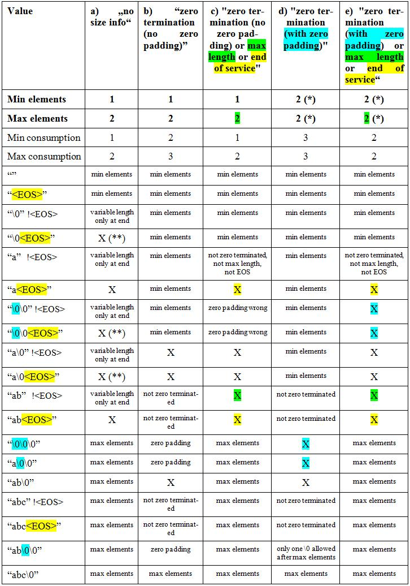

String termination - Values Allowed (CDS-13987 6.5)
See the Data Type Feature.
Possible Values
[DTST-R100] For a field data type, string termination describes how the number of elements can be determined at runtime:
- [DTST-R100-nosize] no size information
- column
a) below
- [DTST-R100-nosizeNoZero] A string value of this data type may contain any byte except 0x00. Tools processing such data may...
- treat the 0x00 as an error, or
- just replace 0x00 by a blank.
- [DTST-R100-leading] 1 .. 5 leading size bytes
- A string value of this data type starts with the declared number (1..5) of size bytes.
- This number is coded in Motorola (high-low) byte order.
- After this number follows the string. It contains the number of bytes defined by the size bytes
- ... not the number of characters (which may be different for Unicode strings).
- Examples:
- 1 leading size byte, byte 0: 0x05, bytes 1..5: "abcde".
- 2 leading size bytes, bytes 0..1: 0x0005, bytes 2..6: "abcde" (Motorola byte order: byte 0 = 0x00, byte 1 = 0x05)
- [DTST-R100-leadingNoZero] The string has the same restriction as [DTST-R100-nosizeNoZero] above.
- [DTST-R100-zero] zero terminated (no padding)
- column
b) below
- A string value of this data type must be terminated by exactly one 0x00.
- [DTST-R100-zeroMaxEOS] zero terminated (no padding; ends at maximum length or end of service)
- column
c) below
- A string value of this data type must either be terminated by exactly one 0x00,
- or contain non-0x00 bytes up to the declared maximum length or to the end of the service (i.e. primitive), no zero termination.
- [DTST-R100-zeroPad] zero terminated (with padding)
- column
d) below
- A string value of this data type must be terminated by one or multiple 0x00.
- [DTST-R100-zeroPadMaxEOS] zero terminated (with padding; ends at maximum length or end of service)
- column
e) below
- A string value of this data type may either be terminated by one or multiple 0x00,
- or contain non-0x00 bytes up to the declared maximum length or to the end of the service (i.e. primitive), no zero termination.
For the representation in the Graphical Telegram Table, see [DOUIG-R130].
Allowed Constellations
- Values that are allowed are marked with “X”
- no other values are allowed
- the table cells contain the reason why not
- “Min elements” / “Max elements” are the values you enter in the datatype dialog.
(*) For zero padding, “min elements” must equal “max elements” (CDS-13987 R003 a).(**) If no zero termination involved, allow \0 within the data (why not?).

Minimum Size at Variable Length
Example:
- CANdela Data Type "Identification",
- minimum 12 characters,
- maximum 17 characters
- zero-terminated
- Const value
"123456789*1\0"
- 11 data characters,
- plus trailing zero termination:
- not valid in the CANdela data model
- valid in ODX
- not an error in CANoe.DiVa
Multiple Zero Padded Segments
- [DTST-D100-Segments]: you cannot describe one data type consisting of multiple zero padded segments.
- Example: "ECU Name" in ISO 15031-5:2006(E), table G.10
- Defined field assignment:
- Data bytes 1-4, “XXXX”, contains ECU acronym, and
- Data byte 5, “-“, ($2D) contains delimiter, and
- Data bytes 6-20, “YYYYYYYYYYYYYYY”, contains text name
- All bytes in each field are available for use, yet any unused bytes shall be filled with $00. The use of any filler bytes shall extend to the end of each field for ECU acronym and name.
- For such a constellation, define multiple data objects and let each one refer a data type with zero padding.